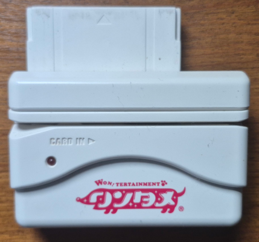
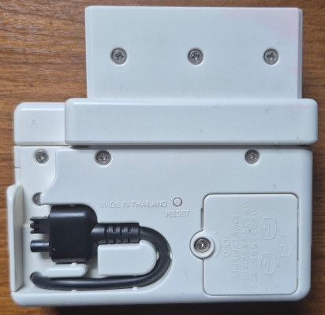
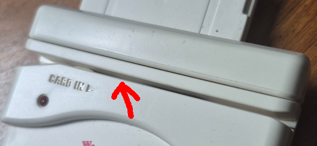
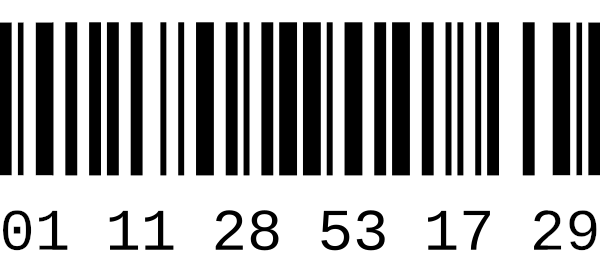
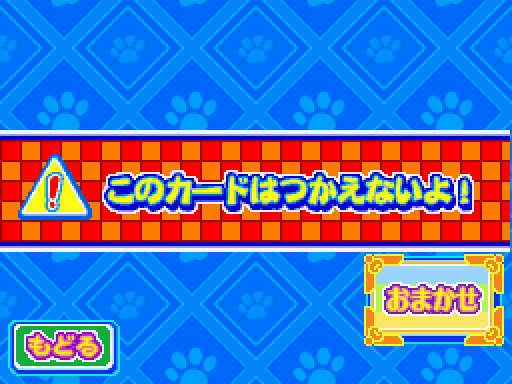

Rescue Dogs
The last article was a momentous ocassion. After years of work and research, every single piece of officially licensed Game Boy hardware was finally emulated. While it took literal decades for the community to reach that, we nevertheless accomplished it. This was one of the biggest goals I'd been pursuing as an emudev, however, it wasn't the only one. Rather than retire, I figured I'd take a short break before jumping right back into the fray. Although the Game Boy is finished, there are still a host of peripherals on other platforms that desperately need preservation. As a result, the Edge of Emulation ain't over. In fact, we're just getting started.
What better way to return to form than by examining a game about... uh... dressing up 3D dogs and making them dance? In November of 2007, Capcom released a game for the Nintendo DS called Wantame Music Channel: Doko Demo Style. It was a rhythm action game where players could choose from a variety of dog breeds, accessorize them with dozens (if not hundreds) of outfits and hats, then have them dance in sync with different music tracks and stages. Doko Demo Style on the DS was actually a port of the larger arcade version. Both games allowed players to scan barcodes from physical cards to select and customize their dog.
The DS Doko Demo Style game came bundled with a small card scanner. Apparently, it has no official name or product code, so I've ended up just calling it the Wantame Card Scanner or WCS to distinguish it from all of the other barcode readers I've covered before. The WCS is very similar to the Wave Scanner for Mega Man Star Force 1, as both products were a collaboration between Capcom and Takara Tomy. Doko Demo Style as a game is also very similar to Sega's Oshare Majo, another card-scanning rhythm action arcade game that got a DS version, complete with its own scanner too, the HCV-1000.
Perhaps the WCS isn't nearly as glamorous as some of the other things I've looked at in the past, but it still marks a serious gap in DS emulation. Even if it's yet another barcode reader, it represents a fairly cool piece of video game history. The cards used for the arcade version were interchangeable with the handheld one. This was a feat only 2 other DS titles managed to pull off. It really gives a feel for how innovative the Japanese arcade scene remained in the mid to late 2000s even as markets in North America and elsewhere stagnated. Although Doko Demo Style can be played without the scanner, it's a somewhat hollow experience without the add-on. As such, it's imperative to emulate the hardware.
Not In The Cards
As always, I tried to get my hands on the hardware so I could run tests on it. After waiting around on Mercari back in 2020, I finally found a copy of Doko Demo Style along with the scanner. The cards were purchased separately, but I had everything shipped together. One thing to note is that the arcade version of Doko Demo Style was periodically updated to support new cards, all the way up to Fall 2009. Capcom even added cats to the game, eventually. The DS version, however, couldn't receive any sort of patches or upgrades, so it was limited to an early collection of cards. I had no idea which ones were compatible, so I just picked a lot online that had a decent amount of cards (100+). I figured at least one of them would work.
The WCS itself slips right into Slot-2 of the DS. It's not too bulky or heavy, and it's only a bit bigger than the HCV-1000. However, the scanner is actually not a Slot-2 device, despite its appearances. The pins used for the GBA slot don't really connect to anything inside the scanner; there's no real circuitry attached. Instead, the WCS outputs data through a small cable that plugs into the DS' microphone. This is just like how the Wave Scanner operates, and it's obvious Capcom/Takara Tomy copied a lot from their earlier work. Slot-2 is merely used to keep the unit stable while the scanner is in use. The microphone cable also makes the WCS compatible with DSi models, which lack Slot-2.
 
Don't be fooled! This scanner does not use Slot-2 on the DS at all!
{kind=link}
Also, it's important to note how pretty all the cards are. Some even sparkle! (Click to enlarge)
Interestingly enough, the WCS also has a removable plastic guard for the portion that connects to Slot-2. This changes how far in players can push the unit into Slot-2, which allows it to sit flush with the original DS or DS Lite. The scanner features a red LED to indicate when a barcode is processing, and the hardware is powered by 3 LR44 batteries. I'm used to dealing with coin-cell batteries like CR1616, CR2025, or CR2032, and common ones like AA or AAA, but LR44 is a first for me in the context of gaming peripherals. The batteries have to be secured by a screw-plate, but players can safely forget about them once installed. The WCS only powers on when it detects a card being swiped, thanks to a small switch inside the... card swipey lane slot thingy, or whatever it's called.

I'm sure there's a proper name for... this, but I don't know what it's called.
Regardless, you can see the activation trigger just above the "CARD IN" engraving.
Before probing the hardware, I wanted to see how the WCS worked in person. After setting everything up, booting the game, and grabbing a couple of cards, I was all prepared to see some delightful dancing dogs. Unfortunately, I would have no such luck. After swiping the card, the scanner seemed to register it, however, it merely started blinking 3 times before doing nothing. The game didn't react at all, not even a message regarding some kind of error. Puzzled, I tried swiping different cards, swiping them left instead of right, backwards instead of forwards. I tried different DS units and different DS models, ultimately to no avail. It seems I'd bought one that was a total dud. To be fair, the seller didn't have a DS themselves and could not test it, which was the reason for its low price. I'd gambled on it working and lost that bet.
That was some years back at the start of 2021, so at the time I put the stuff back on my shelf and started working on other areas where I could make real progress. Finishing the rest of the Game Boy's peripherals was a top priority, so any setbacks on the DS were placed on hold. Jumping ahead, now that everything for the Game Boy was complete, my attention turned back to the WCS. I'll admit, I was bored, I was hungry. For me, there're few things more thrilling than diving into unknown hardware, ripping the system apart, and finding out every little mysterious detail that makes it tick. I can't just not do it, and the WCS looked like a good opportunity to get back into this kind of emudev.
Although my scanner was messed up, I still had access to the game software itself. Instead of reading and analyzing data from the hardware, I'd have to take a peek at Doko Demo Style's code. I'm no stranger to reverse-engineering something solely based on its programming. It's not my first choice, but it may be necessary every now and then. The whole process can definitely prove slow and cumbersome, given how complicated most software is, but it's perfectly doable if ever the hardware becomes inaccessible.
Check Your Pulse
The first order of business was to track down the code that handled microphone input in the Doko Demo Style ROM, which wasn't exactly a straightforward task. Before digging into the game's programming, I had to make sure GBE+ was equipped to receive microphone samples. On the DS, microphone input does not have its own dedicated memory-mapped I/O register, unlike other hardware components such as button input or sound. The CPU can't simply read/write to a single memory location; instead it has to use the DS' Serial Peripheral Interface bus, also known simply as the SPI bus. This essentially transfers 1 byte to/from different components such as the touchscreen and firmware, and it also deals with power management (turning off the speakers, Wi-Fi, and 2D and 3D graphics). The touchscreen controller has several separate channels that can be selected, which will return data such as the X or Y component of touch input. A special channel called AUX is connected to the microphone and provides audio samples.
So, in a rather round-about way, the DS' microphone is accessed through the SPI bus via the touchscreen controller's AUX channel. Please note that this is entirely separate from the AUXSPI bus, which transfers data to and from the cartridge in Slot-1. In any case, GBE+ already handled everything except for the AUX channel. Here, the emulator would eventually have to return 8-bit samples, but for now I simply flagged anytime the microphone was read from. I needed to see what code was trying to record anything, then investigate what the game did with those samples. After booting Doko Demo Style and selecting a play mode, I was prompted to scan a card. At this point, GBE+ began continuously logging thousands of microphone reads. This made sense, as the scanner was probably silent most of the time until the user swiped a card. As a result, the game had to constantly monitor any input audio.
GBE+ alerted me of the exact location in the ROM where the microphone was read. With that information, I set a breakpoint at the given address through the emulator's debugger. Stepping through each instruction, I saw that Doko Demo Style reserved a small 1KB buffer to store microphone samples. Once it reached the end, it would start filling it up again from the beginning. I took note of the buffer's location in RAM, then I set a new breakpoint for anytime the CPU read that data. The initial recording was handled by the DS' ARM7, which on most commercial games is relegated to background tasks like controlling sound and Wi-Fi. The buffer itself was actually processed by the beefier ARM9 CPU, as I later found out.
To get a better idea of what was going on, I turned to the reverse-engineering tool Ghidra to disassemble and decompile the game's code. Within minutes, I'd pinpointed the function where the microphone buffer was accessed. To summarize everything, Doko Demo Style was basically checking for a sound pulse. Every sample was multiplied by 2 first, then compared against the value 0x48. For microphone input, the value of a sample represents its volume, so the code was looking for samples that had reached a certain threshold. The game apparently needed to see at least 9 continuous HIGH samples above the threshold followed by at least 9 continous LOW samples below the threshold. Additionally, each individual HIGH and LOW phase couldn't last more than 16 samples, or else it would restart testing. Once all of these checks had passed, the game moved on to process the rest of the samples.
I figured this was some sort of acknowledgement signal, a kind of flag that alerted the software that valid barcode data was incoming rather than random data or noise. Afterwards, the game began checking for more pulses and calculating their lengths. For this part, the code wanted each pulse to be a minimum of 3 samples and a maximum of 16 samples. If those conditions were true, Doko Demo Style started setting individual bits depending on how long the pulse was. If the pulse was larger than 6 samples, this represented a bit with a value of "1"; smaller pulses would result in a value of "0". Gradually, the game began to construct 3 separate numbers. One was 10-bits long, another was 32-bits long, and the final one was just 7-bits long. Altogether, 49 bits were supposed to be read from the scanner, and that was it.
With all of the barcode data pulled from the hardware, the software had to analyze it somewhere else. Thanks to a few more breakpoints in GBE+, I managed to track down the function in the game that seemed copy and use the barcode data. In Ghidra, it quickly became evident that the 10-bit and 32-bit number were actually treated as a single unit, as far as most of the math operations were concerned. As advanced as the DS was for its time, its CPUs were constrained to 32-bit registers, and it can't natively handle 42-bit values (let alone 64-bit values) for bitwise operations or simple addition/subtraction. A number of instructions were needed to workaround these limitations, but essentially the game spliced the 42-bit value into a total of 6 individual 7-bit variables.
These 7-bit chunks were then ran through a brief equation, and the result was compared against the last 7-bit value received from the scanner, which seemed to be a checksum of some kind. During my previous investigations into other barcode readers and the barcode formats themselves, I learned early on that checksums or rather "check digits" are often used to ensure some form of data integrity after scanning. As barcodes are represented on physical objects, there's always a chance something will go wrong when converting between analog and digital, so check digits help detect basic errors at least. The question here was what kind of check digit was I looking at?
Before tackling the WCS, I'd dug up some info on the Wave Scanner to get an idea of what I might expect. A researcher named Clara Nguyen did an incredible write-up of how that device worked. Most importantly, she explained that the barcode format was Code-128. Sure enough, when I photographed some of my own cards and fed them into online barcode readers, they came up as Code-128. Crucially, however, Code-128 has several variants known as 128A, 128B, and 128C. Each one encodes characters and numbers differently, and the formula for calculating the check digit varies slightly between all 3. Fortunately, the online barcode reader I used told me the WCS cards were in 128C format.
Code-128C is somewhat special in that the only printable characters it encodes are numbers in the range of 00 - 99. It does not support letters or any other symbols. This may seem odd given that the "128" in Code-128 references its ability to support the 128 ASCII code points, but there's a very good reason for the existence of the 128C version which I'll touch upon later. At any rate, all the Doko Demo Style cards I scanned with my phone were in 128C format with no surprises or weird exceptions. Everything seemed to be lining up so far.
Once I'd identified the type of barcode used in the game, I went back to the code and took another look at the equation in Ghidra. As expected, the whole thing looked a bit mangled, having been written in C, then compiled into an ARMv5 binary, disassembled, and finally decompiled into very, very generic C code. In this situation, I simply copied the generic C output from Ghidra, pasted it into a text file, and gradually rewrote everything for better readability. Ghidra can rename functions and variables on its own, but I preferred the freedom and speed of a basic text editor. After a few minutes of rearranging different pieces, tossing in a few comments and notes, and styling everything to my own sensibilities, I had a block of re-created code that I could finally understand.
As previously mentioned, the 42-bit barcode data was broken up into 6 segments, with each segment measuring in at 7-bits. These segments were then used to determine the barcode's check digit, which was also 7-bits. Every segment, therefore, was actually a value from the barcode's numeric representation. The check digit starts off with a specific value depending on what version of Code-128 is used; for 128C, this is 105. Next, the value from each segment of the barcode is multiplied by a "weight" and added to the check digit's total. The first segment is multiplied by 1. The second segment is multiplied by 2. The third segment is multiplied by 3, and so on for each segment. Once all segments have been multiplied and added to the check digit, the sum is modulo'd by 103; the check digit is then the remainder. The section below shows how it's done mathematically:
Sum = 105 Sum = Sum + (Segment1 * 1) Sum = Sum + (Segment2 * 2) Sum = Sum + (Segment3 * 3) Sum = Sum + (Segment4 * 4) Sum = Sum + (Segment5 * 5) Sum = Sum + (Segment6 * 6) Sum = Sum MOD 103
For testing purposes, I used a random 42-bit value and inserted it into GBE+ via the debugger. If the game sees that the calculated check digit matches the check digit provided by the scanner, it then begins verifying the barcode's numbers. Obviously it had to screen out invalid barcodes like 000000000000. Additionally, the barcodes seemed to use a range of numbers or certain numbers to separate cards based on certain categories. Doko Demo Style lets players customize their dogs with 2 types of fashion, generally speaking, a main piece of clothing (dress, outfit, costume) and accessories (hats, jewelry, fancy stuff like devil wings+tail). There's also "Miracle" cards that add some pizzazz to the dog, and cards that unlock specific breeds of dogs. All four of these seem to have barcodes that follow certain patterns, so the game can quickly evaluate what kind of card the player just scanned.
Armed with this knowledge, I set out to get the WCS emulated. However, there was just one problem. The barcode data the game received from the scanner was 42-bits and divided equally into 6 segments. On the other hand, each barcode printed on the Doko Demo Style cards was 12 digit long, e.g. 011128531729. At first I thought that each individual digit corresponded to exactly 1 segment from the 42-bit value. After some consideration, I had a real "Well DUH!" moment when I realized that actually 2 digits were represented by 1 segment. That is to say the barcode 011128531729 is broken up as such: 01 - 11 - 28 - 53 - 17 - 29.

An example of a Code 128C Barcode. Its 6 individual character codes form a single 12-digit number.
This works out nicely, as values of 00 - 99 all fit into 7-bits. It also illustrates why Code-128C is so helpful in certain situations: information density. A program can easily halve the amount of data needed to store a full barcode, and it also allows for quicker, easier calculation of check digits. Although the full numerical barcode reads as 12 digits for humans, it's actually just 6 characters as far as the actual barcode and barcode reading hardware are concerned. Quite clever! Having corrected my understanding of the barcode format, I continued tweaking GBE+ to support the scanner. Using all of this information, I made it so the emulator would wait for the CPU to request data from the microphone, then return bytes that would be interpreted as the correct sound pulses for the acknowledgement signal, the 42-bits of barcode data, and the 7-bit check digit. The results were a success!

Oh... Um... That's not right.
Doggone It!!
Well, it was mostly a success. Like other barcode scanners, I mapped a hotkey in GBE+ to initiate the actual scanning process for the WCS. There was an issue where sometimes the barcode wouldn't be detected right away, as if it were delayed by a few seconds. Many other times it simply did not work. It was like rolling a dice on whether it would scan correctly or not. On the positive side I was able to complete a few attempts, but the lack of consistency was frustrating. I hadn't encountered this problem with other barcode scanners in the past, so I opened up the debugger in GBE+ and stepped through key parts of the game's code during a scan.
The sound pulse data was fine, however, every so often I noticed there was some kind of desync going on. Typically, when this happened, it corrupted the last two bits of the check digit. As a result, the scan would initially be detected but eventually generate an error message on-screen. I double checked the code in Ghidra, and to my surprise I'd overlooked an important detail. Originally, I thought that only 1 sound pulse was needed for the acknowlegdement signal. Upon closer inspection however, the acknowledgement signal was comprised of 2 pulses back-to-back. Fixing that proved trivial, and once done the scan was successful each and every time with no delay.
The only thing left now was to figure out how to import the barcode into the emulator rather than hard-coding a specific test case. Generally, GBE+'s approach is to read a text file that contains the barcode in alphanumeric form. From there, GBE+ will decide how to interpret it depending on the game and the hardware. That works well enough, especially from a GUI, but it can be a bit cumbersome to have a bunch of text files sitting around in a folder, manually selecting them via a file picker tool. For the WCS, I decided to do something special and designed a menu where the barcode can manually be typed in. Having a drop-down menu would be ideal (I do this for the Battle Chip Gate), but that'll have to wait until I can reasonably gather a semi-complete list of barcodes. Players can still load barcodes via a file picker with a single click, however.
At any rate, emulation of the WCS was now complete. Although I didn't have access to a functioning unit, I was still able to get everything working. Sadly, there were a few things I wasn't able to test since my hardware didn't work. For example, I couldn't see if the WCS produced any detectable noise when not scanning, nor could I know for certain the exact volume levels of each sound pulse. While these aren't strictly necessary to preserve the device itself, that kind of information is still useful for the sake of completeness.

While the NDS core in GBE+ needs a lot of work, it can at least show you all these cute puppies!
Unfortunately, I can't show the game in action. The NDS core of GBE+ only handles the menus and initial card scanning stuff. The actual rhythm section of the game gives a blank screen in the emulator. It's fully 3D stuff, an area where GBE+ needs a lot of attention. I know, I know, I've been working on NDS emulation on/off for like 8, 9 years and I still haven't gotten a bunch of games playable. To be fair, I've been quite busy with other things over the past decade. However, with all of the Game Boy peripherals and hardware emulated, I now have time to devote to NDS stuff. In fact, the WCS has rekindled my desire get GBE+ in shape.
We're So Back
The scanner for Doko Demo Style was an interesting project for me personally. Like the Barcode Boy and HCV-1000, this device pretty much passed the raw alphanumeric barcode to the CPU, but it was the only one I've seen so far that explicitly passed along the check digit separately. EAN-13 barcodes include the check digit as the last number. Meanwhile Code 39 barcodes don't use check digits at all. Overall, it was a fresh experience learning about the finer details of the Code-128 barcode format. Most of the time that's simply just not needed. I also appreciated working the DS' microphone in GBE+. Adding support for the scanner required setting up a new, albeit small framework within the emulator. Thanks to that, it should be easy to get the Wave Scanner working in the future.
Speaking of the future, the Nintendo DS has a lot of unemulated accessories: TV tuners, digital cameras, robot dogs, azimuths, an SD card video platform, and even GPS-enabled cars. The 7th Gen portable was every bit as wild and innovative as the Game Boys were. As I've said before on other occassions, items like these aren't getting any younger, so their preservation will be at the forefront of my next efforts. Although some of this stuff sounds crazy, at this point it's safe to say I kinda like crazy. I'll emulate anything and everything (yes, even a car).
However, the DS isn't the only thing on my radar. I've been planning on expanding to other systems as well. So far, all of my work has mostly been on Nintendo's handhelds, and I've dabbled with the GameCube briefly. Soon, hopefully, I'll have something to share regarding different consoles, ones outside of the Nintendo ecosystem too. I don't want to spoil anything at this time, but expect the Edge of Emulation to slowly start covering a broader spread of hardware. The fight to preserve video games is far from finished. We're honestly years away from even getting a majority of this stuff researched and documented. It's a long, seemingly endless journey. Even so, we're making progress every day.